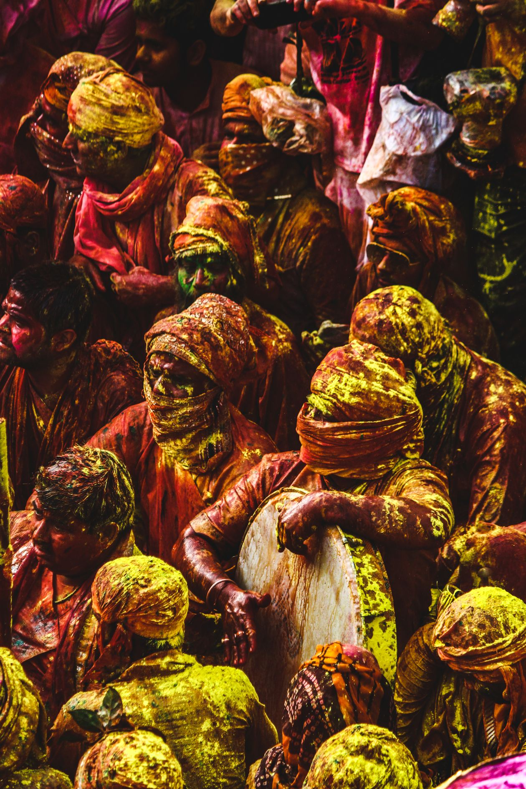

Varanasi · Mahashivratri & Holi
In Thatheri Bazar, Holi begins at my stone a month before it reaches the street.
I am Keshav Prasad. On the night of Mahashivratri — Saturday 6 March this year — the first almonds of the season go into soak, and from that night until Holi, Monday 22 March, my two grinding stones do not rest in daylight. What I sell is written down before it is ground: every ingredient weighed, every batch dated, every order entered in this ledger where you can read it.
Thandai is a ledger before it is a drink. What went in, when it was ground, and the day it must be drunk by — if a maker cannot show you those three lines, you are buying a rumour in a bottle.
The season at a glance

The Measure — for one litre
This is the whole recipe. It has not changed since my father's hand wrote it, and the planner below is not allowed to use any other numbers — it reads from this table, the way an apprentice would.
| Ingredient | What it does | Per litre |
|---|---|---|
| Almonds, soaked overnight, skins slipped | The body of the drink | 50 g |
| Fennel seed | The coolness — thandai means "that which cools" | 10 g |
| Poppy seed (khus khus) | Thickness, and sleep after the feast | 10 g |
| Melon seed (magaz) | Smoothness in the grind | 10 g |
| Black pepper, whole | The slow heat at the back of the throat | 2 g |
| Green cardamom | The perfume | 2 g |
| Dried rose petals | Colour and the first smell | 5 g |
| Saffron | A pinch — more is showing off | 0.25 g |
| Sugar | Less than the bottled makers use | 80 g |
| Full-cream milk | Bought the same morning, never yesterday's | 1 litre |
The rules of the house, printed so I cannot bend them
Prices — the shape of them, in the open
The Holi Order Planner
Tell the ledger about your gathering. It works in the open — every figure below comes from the Measure on this page, and if the stones cannot do what you ask, it will say so and name what I can send instead.
Enter your gathering
Workings: 40 glasses ÷ 5 to the litre = 8 litres · 8 × ₹450 = ₹3,600.
The planner is a reckoning, not a booking — it never takes money and never promises what the verdict refuses. To place the order it describes, use the order page or write to hello@thandaifrost.example.
Last season, entered as it happened
The full entries — who asked, what was ground, what it came to — are in the Order Book.
“Sixty litres, through the whole Shivratri night, and the last glass tasted like the first. Prasad ji showed me the page where my order was written before he showed me the bill. That is why the lane trusts his stone.”
Put your gathering in the book
Orders for Holi 2027 close Wednesday 17 March. One path, no forms hidden behind forms: the order page, or one email.
Or write directly: hello@thandaifrost.example — I answer in the evening, after the stones are washed.